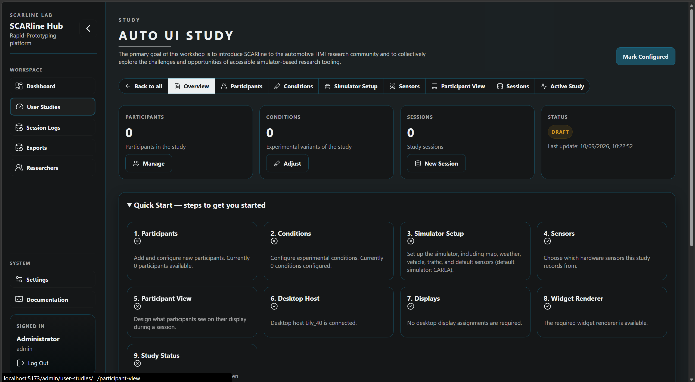

The SCARline Hub
One workspace for every study
Set up participants, conditions, simulator, sensors and displays in one place, then run and review every session from the same screen. A built-in checklist shows exactly what's missing before a study can go live.

Your study.Not the plumbing.
You design the interaction. SCARline takes care of everything between your idea and a running study.
SCARline at a glance
- 24 ready-made widgets
- 5 sensor drivers
- 2 simulators: CARLA and mock
- 1 command to start it all
From idea to dataset
-
01
Design
Conditions, simulator, sensors and the participant's displays.
-
02
Run
Live sessions with telemetry, triggers and notes.
-
03
Review
Every event logged, exported as pseudonymised CSV or JSON.
Live widgets
Interfaces that react to the drive
Widgets read speed, distance and vital signs straight from the simulation and sensors, and switch to their triggered state the moment a condition is met.
Built by researchers at
- Technische Hochschule Ingolstadt